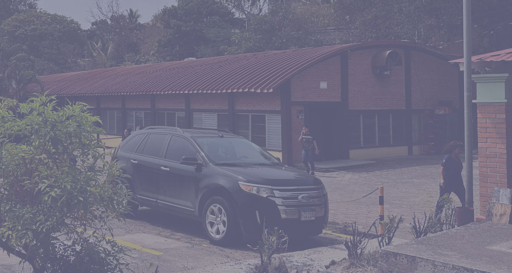
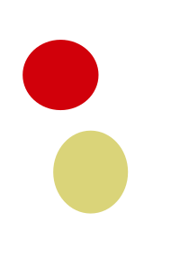
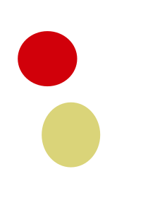
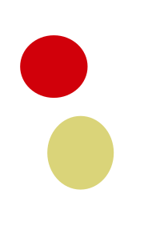

Imagenes en HTML

Acuario de Tela: un lugar para disfrutar en familia las bellezas de la fauna maritima de las costas hondureñas.



 Acuario de Tela: un lugar para disfrutar en familia las bellezas
de la fauna maritima de las costas hondureñas.

Acuario de Tela: un lugar para disfrutar en familia las bellezas
de la fauna maritima de las costas hondureñas.
